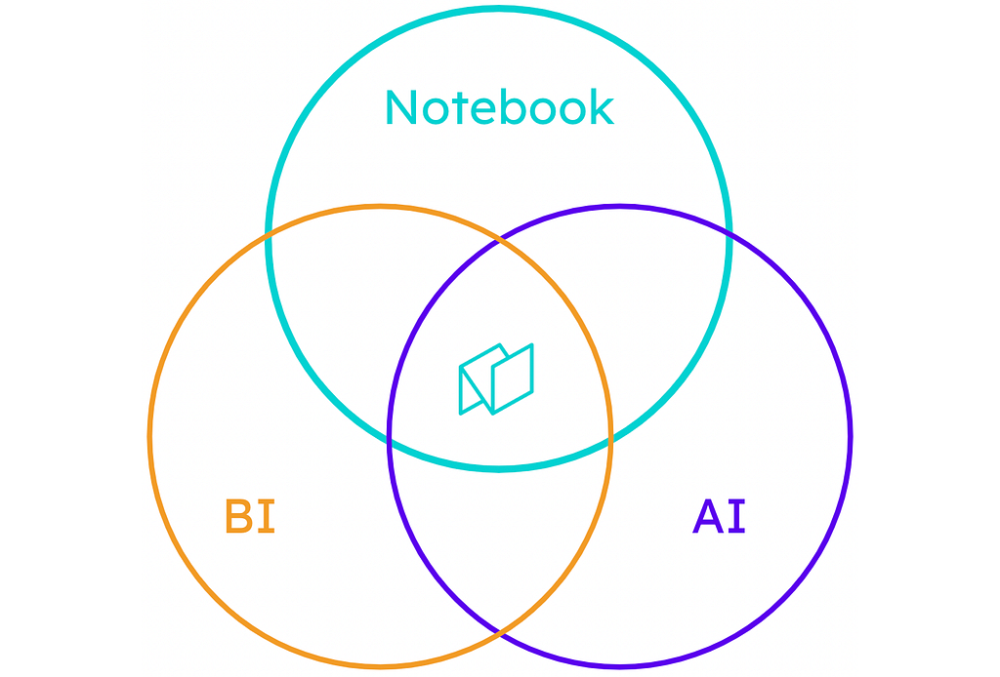
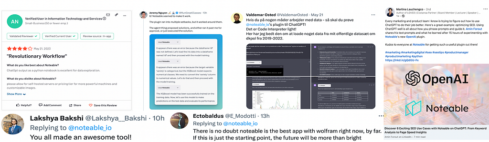
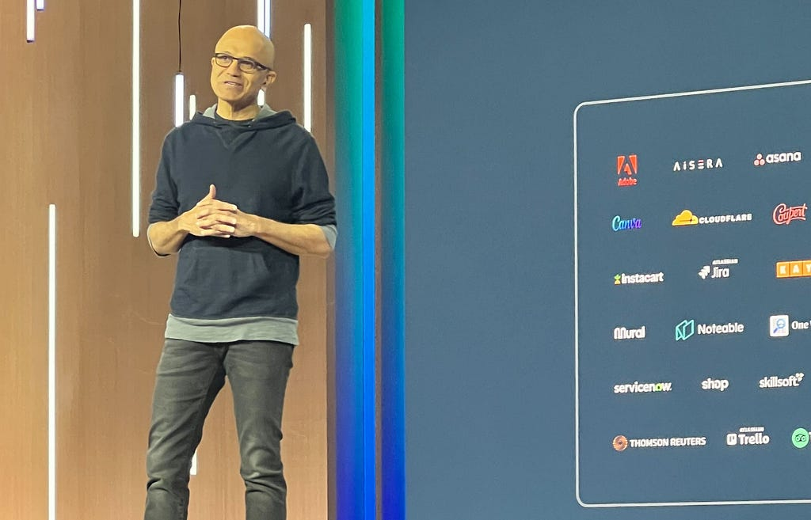
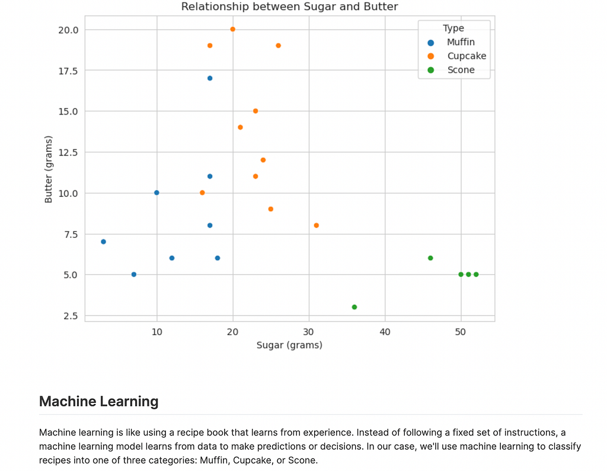

Noteable’s Notebook Plugin for LLMs
In case you didn’t see our announcement a little over a week ago, Noteable officially released its plugin for ChatGPT that allows you to create an entire data-driven document with only a prompt. We saw the natural language functionality of LLMs as a perfect complement to our powerful notebook platform and its integrated no-code data visualization capabilities.

As we developed the plugin internally, we were amazed by the capabilities found by combining Jupyter notebooks, BI tool functionality and AI. We were so excited to introduce it to the world and see a few people make computational notebooks with ChatGPT. But we had no idea that little over a week later we would see the plugin used by so many people in such a variety of ways.

And today we can announce that not only is the Noteable plugin officially one of the most popular plugins on ChatGPT but Microsoft has also announced that the Noteable Plugin will be one of the initial plugins available as part of Bing UI!

Unlike other plugins, when you ask Noteable a question, you don’t just get an answer, you get an entire interactive document filled with features like sharing, git integration and no-code data visualization. We’ve seen the plugin already revolutionize who can do data science and analytics as well as how they do it. Here are a few notable (pun most definitely intended) examples:
Chad Skelton on Twitter: "I remain impressed at what ChatGPT/@noteable_io can do with generic prompts like "I wonder what I'm missing. Can you run various different types of calculations and analysis on this data and see if you can find any other interesting trends or patterns?" Charts + summary text. pic.twitter.com/1CPQwl3T3k / Twitter"
I remain impressed at what ChatGPT/@noteable_io can do with generic prompts like "I wonder what I'm missing. Can you run various different types of calculations and analysis on this data and see if you can find any other interesting trends or patterns?" Charts + summary text. pic.twitter.com/1CPQwl3T3k
Here’s Chad Skelton showing off the power of the continuing conversation with the plugin about your work. Asking it simply “What am I missing?” leads to further analysis of the data and explanation of why it might be important.

Reuven Lerner’s deep dive into the plugin shows off how it isn’t just helping people who don’t know how to code to get access to computational notebooks, it’s also helping people who are veteran notebook users do better work faster.
goldengrape @goldengrape@mathstodon.xyz on Twitter: "你知道斐波那契数列的4种解法么？刚才用ChatGPT+ #noteable 插件 试了试，还不错啊，特别是用了矩阵乘法，但不确定为什么GPT自己写了一遍乘法，没有直接用numpy，于是最后一种速度不够快，其实几个算法里用np速度绝对前列。 pic.twitter.com/Jq9bsJeXoR / Twitter"
你知道斐波那契数列的4种解法么？刚才用ChatGPT+ #noteable 插件 试了试，还不错啊，特别是用了矩阵乘法，但不确定为什么GPT自己写了一遍乘法，没有直接用numpy，于是最后一种速度不够快，其实几个算法里用np速度绝对前列。 pic.twitter.com/Jq9bsJeXoR
And here’s one of many examples of the Noteable Plugin already being used for non-English language work. One of the great things about integration into ChatGPT is that while the majority of online code examples and tutorials are in English, you can use our plugin in whatever language you want.
3 Key Values that the Noteable Plugin Delivers
It opens the world of analytics to those who don’t code often
The ability to use a conversational language to query, explore and even perform advanced machine learning allows folks to go on a guided exploration and derive data driven conclusions. Think coding’s not your thing but still want to dive into analytics? With the Noteable Plugin you can just ask questions, explore data, and even do some serious machine learning. It’s not just a friendly guide for your data journey, it’s also your entire support team planning that journey, equipping you and finding you new paths when you get stuck.
It helps bring more ideas to reality
Have you had a brilliant idea but struggled to bring it to life? That’s where the Noteable Plugin shines, turning your thoughts into code, explanation, visualization and even interpretation of those results. It’s all about making it easier for you to create whatever you imagine. All you need is an idea.
It empowers you with 1:1 Personalized Learning
Ever wish you had a tool that not only helps you get stuff done but also teaches you along the way? That’s what the Noteable Plugin does. It creates tutorials and examples that double up as learning resources, so more people can do more cool things. And if you ask it to, it will make sure to present it in a tone and with the metaphors that make the most sense to you or your audience. Here’s an example of machine learning explained using baking metaphors.

The Future of the Noteable Plugin
We’re not even close to achieving the full vision of the Noteable plugin. We’re going to keep extending the plugin functionality and soon you’ll be able to read and rewrite your existing notebooks all from a prompt. On top of this, we’re going to continue to improve our great notebook UI so that your experience working with and sharing your notebooks is first-in-class. You’ll be able to use the plugin in wherever you need it, whether in publicly accessible AI interfaces like ChatGPT or Bing, or connected to your private LLM in your organization. And everyone will be able to work with data the way they want.
Check out the Noteable Plugin today!
One Week Into The Future of Analytics was originally published in Noteable on Medium, where people are continuing the conversation by highlighting and responding to this story.